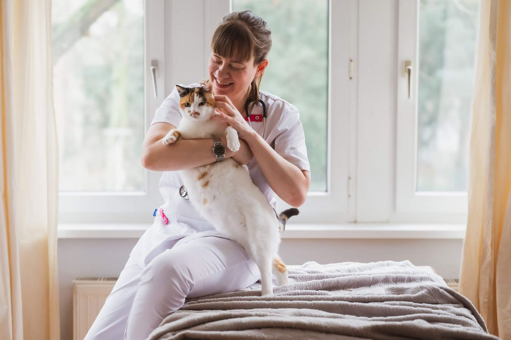

Tierarzt in Kreuzberg · Bergmannkiez Medizin mit Ruhe.
Mitten im Kiez.
Moderne Tiermedizin für Hunde, Katzen und Kleintiere in Kreuzberg. Mit Zeit für Ihre Fragen und einer Praxis, in der sich auch ängstliche Tiere sicher fühlen.

UrbanVet, unser mobiler Tierarztdienst, kommt zu Ihnen nach Hause. Dieselbe Praxis, dieselbe Patientenakte.
Von der ersten Impfung bis ins hohe Alter
Vorsorge & Impfungen
Gesundheitschecks, Impfungen, Parasitenschutz und der EU-Heimtierausweis.
Mehr erfahren →Labordiagnostik
Blut-, Urin- und Kotuntersuchungen für schnelle, sichere Befunde.
Mehr erfahren →Innere Medizin
Abklärung chronischer Erkrankungen von Niere, Herz, Schilddrüse und Magen-Darm.
Mehr erfahren →Seniorentiere & Abschied
Schmerztherapie, Lebensqualität im Alter und ein würdevoller Abschied.
Mehr erfahren →Hausbesuche mit UrbanVet
Für ängstliche, ältere oder kranke Tiere. Behandlung in vertrauter Umgebung.
Mehr erfahren →Chirurgie, Zahnheilkunde & Röntgen
Die Praxis wächst. Bis dahin überweise ich für Operationen, Zahnbehandlungen und Röntgen an erfahrene Partnerkliniken in Berlin und begleite Sie dabei.

Weniger Stress für Ihr Tier. Und für Sie.
Ich nehme mir Zeit, arbeite mit ruhigen Handgriffen und richte die Praxis nach den Bedürfnissen der Tiere aus.
- Katzen-Sprechstunde
feste Zeiten nur für Katzen - Termine ohne Wartezeit
pünktlich statt Wartezimmer - Ruhige Behandlung
Leckerli, rutschfeste Tische, Zeit - Pheromone & Licht
gedämpft, beruhigend, leise
In drei Schritten zu uns
Termin buchen
Online in 90 Sekunden oder telefonisch. Sie wählen Anliegen und Uhrzeit.
Unterlagen bereitlegen
Impfpass oder EU-Heimtierausweis, Vorbefunde und aktuelle Medikamente.
Vorbeikommen
Ich nehme mir Zeit für den ersten Check und all Ihre Fragen.

Ein Gesicht, das Ihr Tier kennt
KiezVet ist eine Einzelpraxis. Bei jedem Besuch behandelt [Dr. Vorname Name] Ihr Tier persönlich. Dieselbe Person kommt mit UrbanVet auch zu Ihnen nach Hause. Kein Wechsel, keine Wiederholung der Vorgeschichte.
English-speaking vet in Kreuzberg: appointments are also available in English. Book online or give us a call.
Gleich um die Ecke
Katzen-Sprechstunde: Di und Do 14–16 Uhr
U-Bahn: U7 Gneisenaustraße · U6/U7 Mehringdamm · U7 Südstern
Karte wird aus Datenschutzgründen nicht automatisch geladen.
Route in Google Maps öffnen
Wenn Ihr Tier nicht zu uns kommen kann, kommen wir zu Ihnen.
Hausbesuche für ängstliche, ältere oder immobile Tiere, Notfälle außerhalb der Sprechzeiten und ein würdevoller Abschied zu Hause. Mit unserem mobilen Dienst UrbanVet.